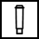

Illuminated = ready
Flashing = heating up
Illuminated = change filter
Flashing = change in process

Illuminated = fill reservoir
Flashing = insert reservoir
Illuminated = empty tray
Flashing = insert tray
Illuminated = strength level
Flashing = fill beans
Illuminated = cleaning running
Flashing = clean needed
Illuminated = descaling running
Flashing = descale needed
Illuminated = steam ready
Flashing = dispensing